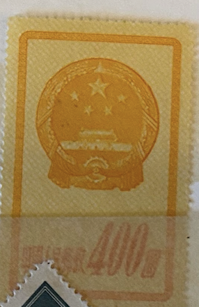
| SOURCE | TITLE| IMAGE MATCH | click to source page |
| HipStamp | China, Peoples Republic, 1951, National Emblem, 400$, unused | Asia - China, Stamp / HipStamp | 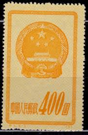 |
| eBay | China, People's Republic of Scott #118 Used PRC | eBay | 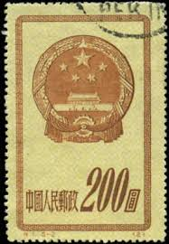 |
| HipStamp | China (PRC) 119 MH NGAI | Asia - China, Stamp / HipStamp | 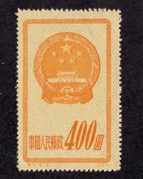 |
| PicClick UK | THE PEOPLE'S REPUBLIC Of China Postage Stamps 1993 - Besfond Philately Goods Co £49.99 - PicClick UK | 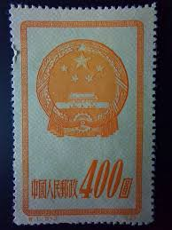 |
| HipStamp | China, Peoples Republic, 1951, National Emblem, 200$, used | Asia - China, Stamp / HipStamp | 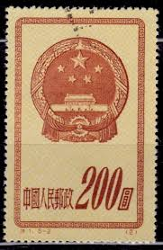 |
| China, Peoples Republic, 1951, National Emblem, 400$ | 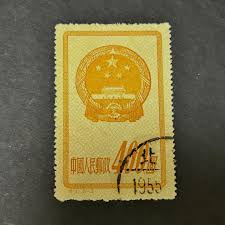 | |
| eBay | China (PR) #121 used | eBay | 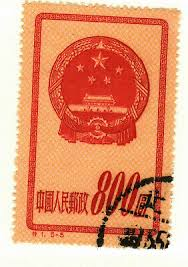 |
| eBay | China (PR) #118 used | eBay |  |
| eBay | China (Peoples Republic) #121, Mint/F/NG as issued, National Emblem, 1951 | eBay | 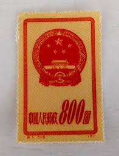 |
| HipStamp | China-1951-Sc#121 -National Emblem With Border MNH VF WE Ship to Worldwide | Asia - China, General Issue Stamp / HipStamp |  |
| Etsy | 30th Birthday Charm Bracelet, 1995 Chinese Yuan, Personalise the Bracelet With Choice of Initials or Birthstone - Etsy Singapore | 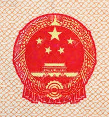 |
| Xabusiness.com | C68 Scott 441-444 10th Anniv. of Founding of PRC(2nd Set) - China Stamps | 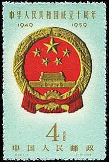 |
| Comparison of the 10 Basic Principles of the **Communist Manifesto** and the **People's Republic of China Today**. And I will ask you this: In your opinion, is the People's Republic of China | 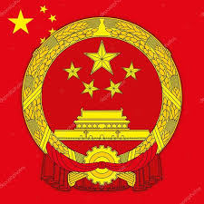 | |
| Shutterstock | China Circa 1951 Stamp Printed China Stock Photo 102342220 | Shutterstock | 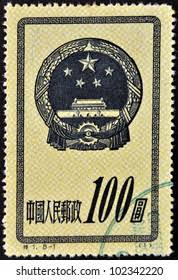 |
| PicClick | CHINA EX OLD Time Selection of Used & Mounted Mint examples. (74) $1.34 - PicClick | 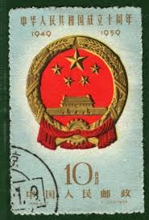 |
| Just arrived!!! Lot 925061: Stockbook Taiwan and Iraq, interesting lot!! Price: only $ 49 ( € 45 ) | 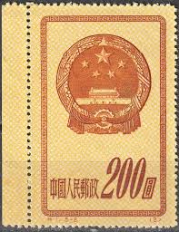 | |
| AgAuNEWS | WORK OF CHINESE ARTIST XU BEIHONG CELEBRATED ON FOUR NEW COINS - AgAuNEWS | 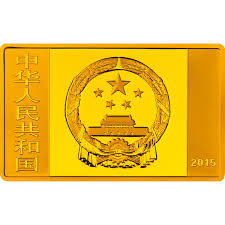 |
| Find Your Stamps Value | Commemorate 10th anniversary of the Proclamation of the People's Republic of China: National Emblem - 中华人民共和国成立十周年: 国徽4f Pale green, Red & gold stamp price, value | 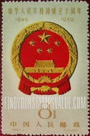 |
| WordPress.com | educational standards | Theodore Dalrymple writes: | 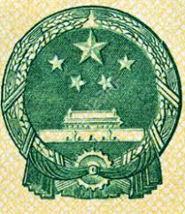 |
| iStock | National Emblem Of Bangladesh Pattern Design On Bengali Currency Stock Photo - Download Image Now - iStock | 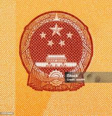 |
| Wikimedia.org. | Category:National emblem of the People's Republic of China - Wikimedia Commons | 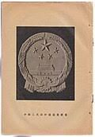 |
| eBay | China Banknote 2 Yuan 1960 Pick#875a2 Wmk stars 3 Roman Numerats Rare UNC PG65+ | eBay | 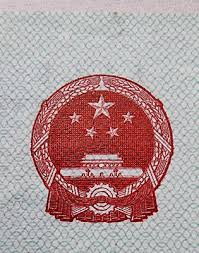 |
| MutualArt | Sun Chuanzhe | 3 Artworks at Auction | MutualArt | 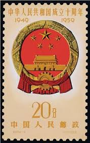 |
| Phone Book of the World.com | China Gov Phone Numbers Directory by PBof.com | 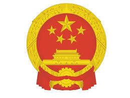 |
| Shutterstock | China Circa 1959 Cancelled Postage Stamp Stock Photo 2706936895 | Shutterstock | 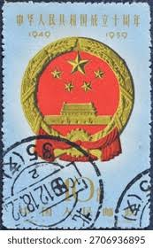 |
| China Passport with a Chinese visa sticker : r/PassportPorn | 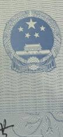 | |
| Shutterstock | China Prc 1959 October 1 20 Stock Photo 2197940307 | Shutterstock | 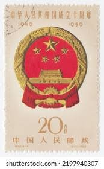 |
| eBay Australia | Used Individual Chinese Stamps for sale | Shop with Afterpay | eBay Australia |  |
| HipStamp | China Stamps: 1951 Sc#120 National Emblem Mint Stamps- 69 Years OLD Stamp | Asia - China, General Issue Stamp / HipStamp |  |
| HipStamp | China Stamp: 1959 Sc#443 10th Anniversary of China Cto-Mnh Stamp. Very Rare. | Asia - China, General Issue Stamp / HipStamp |  |
| HipStamp | China-2004-Sc#3392-3 China Flag & National Symbols Large. Mnh- S/S-Vf-Rare | Asia - China, General Issue Stamp / HipStamp |  |
| Shutterstock | Chinese Red Stamps: Over 2,258 Royalty-Free Licensable Stock Photos | Shutterstock | 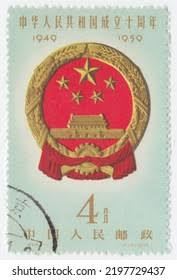 |
| eBay | Peoples Republic of China SC #117-21 Mint NH Set 1951 | eBay | 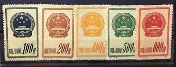 |
| eBay | 56793 China Stamp 1959 4c UNH Beautiful Stamp Coll SP* | eBay |  |
| Numista | 2000 Yuan (Year of the Snake) - People's Republic of China – Numista | 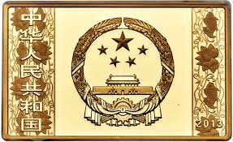 |
| IMGBIN.com | National Emblem Of The People's Republic Of China Symbol PNG | 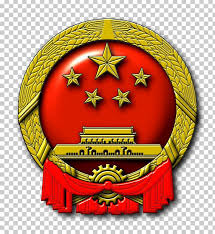 |
| Alamy | National Emblem of China on postage stamp Stock Photo - Alamy | 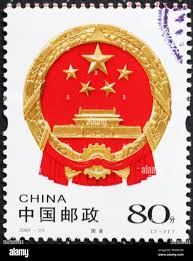 |
| europa.eu | Council of the European Union - PRADO - CHN-JO-05003 | 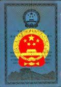 |
| Xabusiness.com | 1979 China Stamps |  |
| China Ships dual-use Goods to Russia; Will the US and EU now impose… | Kenneth Rijock |  | |
| Alamy | CHINA - CIRCA 2004: A stamp printed in China shows 2004-23 National Flag and Emblem of the people's Republic of China , circa 2004 Stock Photo - Alamy | 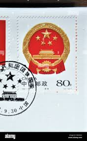 |
| DT Stamps | Shop | 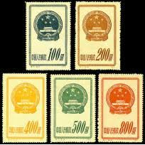 |
| PNGEgg | Round red building and stars illustration, National Emblem of the People's Republic of China Euclidean, Chinese national emblem, emblem, chinese Style png | PNGEgg | |
| Numista | 2000 Yuan (Year of the Dragon) - People's Republic of China – Numista |  |
| Shutterstock | 6,810 Currency. Coat Of Arms Royalty-Free Images, Stock Photos & Pictures | Shutterstock | 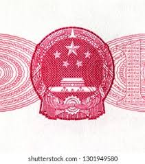 |
| eBay | PRC China 1999 Commemorative & Special Stamps Hard Bound Slip Case Collection | eBay | 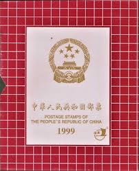 |
| PicClick | CHINA PRC 1959 C69 Sc #445-452 10th Anniversary Of PRC Stamps. MNH. O.Gum $50.00 - PicClick | 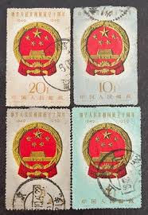 |
| Fandom | Southwest Asia | The Countries Wiki | Fandom | 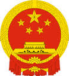 |
| NGCcoin.hk | Chinese Coins: Year of the Horse Coins Gallop In | NGC | 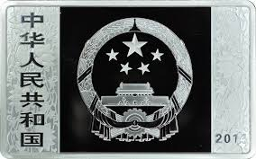 |
| Shutterstock | China Prc 1959 October 1 20, arkistovalokuva 2197940307 | Shutterstock | 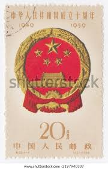 |
| PicClick | CHINA 9TH NATIONAL People's Congress 1998 MNH SG#4271 MI#2896 Sc#2845 $1.80 - PicClick | 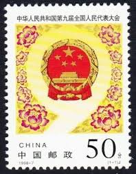 |
| HipStamp | China-1960 Bank of Zhongguo Renmin Yinhang ONE Jiao Uncirculated Currency VF | Asia - China, Stamp / HipStamp | 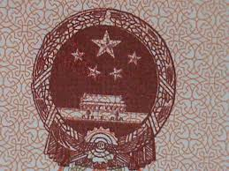 |
| Dreamstime.com | 1,114 Renminbi Notes Stock Photos - Free & Royalty-Free Stock Photos from Dreamstime - Page 3 | 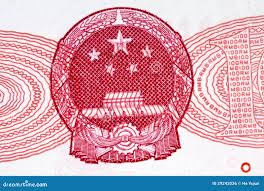 |
| eBay | CHINA PRC 1959 NATIONAL EMBLEM (Scott 442-444 SHORT 441) VF USED CTO MNH | eBay |  |
| Redbubble | "National Emblem of the People's Republic of China - National Emblems" Poster for Sale by webdango | Redbubble | 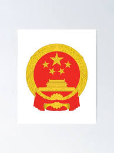 |
| Dreamstime.com | China National emblem stock photo. Image of background - 36060708 | 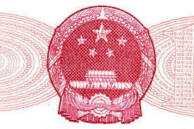 |
| PicClick | BLOCK OF 4 Sstamps From China Mnh #4 $0.50 - PicClick | 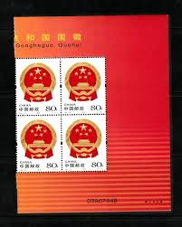 |
| Freepik | Five yuan on macro high resolution photo | Premium Photo | 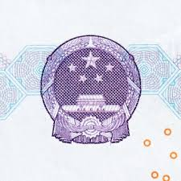 |
| Dreamstime.com | Ancient Chinese Paper Bill Stock Photos - Free & Royalty-Free Stock Photos from Dreamstime | 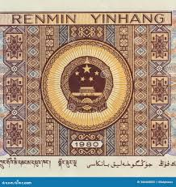 |